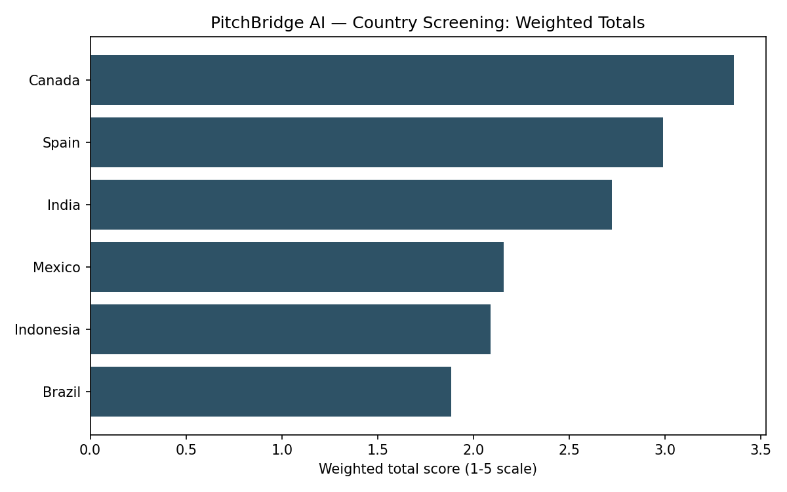

Welcome, founders.
This toolkit collects the AI prompts and templates you'll use across the semester to build your born-digital, born-global venture. Each stage unlocks here as we reach it in class — check back regularly.
Never used an AI chat tool before? Follow these steps exactly.
- Open an AI chat tool in your browser. Any of these work and have a free version: chat.openai.com (ChatGPT), claude.ai (Claude), or gemini.google.com (Gemini). You may need to create a free account with your email.
- Come back to this page and use the menu on the left to open the step you're working on (for example, "Step A · Idea Generation").
- Get the prompt. Click the green Download button to save the prompt as a file, or click Copy to copy the text directly.
- Paste it into the message box of the AI chat tool you opened in step 1.
- Before you press Enter, replace every bracketed placeholder — things that look like
[TEAM NAME / FOUNDER NAMES]— with your team's real information. The AI reads the brackets as instructions, not decoration, so leaving them in will confuse it. - Press Enter (or click the send button) and read the entire response before doing anything else.
- Save the AI's answer immediately — copy/paste it into a Google Doc or a plain text file on your computer. Some AI tools do not keep your chat history forever, and you cannot get the output back once it's gone.
- Follow the "After you run it" checklist on the step's page to turn that raw AI output into your actual assignment.
Stuck at any point? Ask a classmate or bring it to office hours — this page will not change or grade anything for you, it only gives you the starting prompt.
How to use this
Open the step you're working on, download or copy the prompt block, paste it into the AI tool of your choice, fill in your team's details, and follow the "after you run it" notes to fold the output into your assignment.
Keep your records
Every prompt here feeds your AI Use & Founder Decision Log and Evidence Ledger. Save raw AI output as you go — don't try to reconstruct it later.
Step A — Structured Idea Generation
Use this prompt to generate and screen at least five venture ideas. Do not ask an AI tool for "a good business idea" — this prompt forces constraints, a decision matrix, a competitor check, and pros/cons instead.
Get the file
Download the prompt as a text file, or scroll down and use the "Copy" button on the prompt box instead — either way works.
↓ Download Step A Brainstorming Prompt.mdBefore you paste this in
Fill in these fields, then paste the whole block below into your AI tool.
[TEAM NAME / FOUNDER NAMES] — who's asking[FOUNDER SKILLS, LANGUAGES, PRIOR EXPERIENCE] — what your team brings[INDUSTRY, INTEREST AREA, OR PROBLEM SPACE] — leave "open" if you have no starting point[WEEKS AVAILABLE TO PROTOTYPE] — realistic time before Assignment 1 is due[TOOL TYPE] — does your AI tool create files / run code, or is it chat-only?The prompt
Act as a startup ideation and market-screening advisor for a three-founder student team building a born-digital, born-global venture for a semester-long international business course project. TEAM CONTEXT - Founders: [TEAM NAME / FOUNDER NAMES] - Skills, languages, and relevant experience: [FOUNDER SKILLS, LANGUAGES, PRIOR EXPERIENCE] - Interest area (leave open if none): [INDUSTRY, INTEREST AREA, OR PROBLEM SPACE] - Time available to build a working prototype: [WEEKS AVAILABLE TO PROTOTYPE] - My tool type (has file/code capability, or chat-only): [TOOL TYPE] HARD CONSTRAINTS — every idea must satisfy all four 1. Digitally deliverable: the core product/service can be delivered entirely through software, with no physical shipping required to serve a customer. 2. Potentially scalable across borders: nothing about the idea limits it to one country (e.g., no dependence on a single country's physical infrastructure, license, or regulator). 3. Solves a definable customer problem: name the customer and the specific pain point. Reject ideas where the "problem" is vague or the customer segment is "everyone." 4. Feasible for a student team to prototype in the time available: a working demo (even a simple one) must be realistic given our skills and weeks above. TASK 1 — GENERATE IDEAS Generate at least 5 distinct venture ideas that satisfy all four constraints. For each idea, provide: - Working name - One-sentence pitch - Target customer (be specific — not "small businesses," but e.g. "solo freelance graphic designers in emerging-market cities") - The customer problem in one sentence - Why it is digitally deliverable - Why it is plausible cross-border (which regions/segments might it fit beyond one home market, and why) - Rough revenue model TASK 2 — SET UP A RESEARCH FOLDER AND ANALYSIS SCRIPT For each of the 5+ ideas, list 2-3 data points that would help us judge "global scalability," "customer problem severity," and "data availability" in the decision matrix in Task 3 (e.g., market size for the target segment, digital adoption rate, number of visible competitors). For each data point, name where we could actually find it: our university library databases (Statista, Euromonitor Passport, IBISWorld, MarketLine, Business Source Complete) or public sources (World Bank Open Data, ITU DataHub, OECD, globalEDGE). Do not invent values — only propose what to look for and where. If my tool type above has file and code capability: - Create a project folder structure for me: a top-level folder with /data/raw (for exported files or pasted tables from library databases), /data/sources (a running log: source name, URL/database, date accessed, what it's for), and /analysis (scripts and outputs). - Write a Python script that reads a simple CSV I'll fill in (columns: idea name, criterion, raw score 1-5, weight) and outputs: a normalized weighted score per idea, a ranked bar chart, and a printed summary table. I will fill in the actual scores after I do the research — do not fabricate data to fill the template. If my tool type above is chat-only: - Give me the same folder structure as a checklist I can create manually in Google Drive or on my computer, and give me the same Python script as a code block I can run myself in Google Colab once I have real data. TASK 3 — DECISION MATRIX Build a decision matrix with the 5+ ideas as rows and these criteria as columns: customer problem (severity/clarity), global scalability, differentiation, feasibility for our team, data availability, and founder interest. Leave every score cell blank for us to fill in after research — do not assign scores yourself. Suggest a starting weight (must total 100%) for each criterion and explain the logic for each weight in one sentence. TASK 4 — COMPETITOR CHECK For each idea, name 2-3 obvious existing competitors or substitutes (real products/companies, not hypothetical ones) that already address a similar problem. For each, state in one or two sentences what would be genuinely different about our offering. If you are not confident a named competitor is real and current, say so explicitly instead of guessing. TASK 5 — PROS AND CONS For each of the 5+ ideas, list 3-4 pros and 3-4 cons, covering at minimum: market/customer risk, technical/build risk, and competitive risk. OUTPUT RULES - Do not pick a winner. Present all ideas neutrally with their matrix, competitor notes, and pros/cons, then stop. The founders — not the AI — make the final selection, and that decision and its reasoning will be recorded separately. - Flag anywhere you are uncertain, guessing, or lack current information instead of filling the gap with an invented fact. - Format the response with clear headers per idea plus one combined table for the decision matrix.
After you run it
- Save the raw output and log it in the AI Use & Founder Decision Log (tool used, prompt summary, what you kept/changed).
- Do the actual research named in Task 2 using UA library databases and the public sources listed, and record each source in the Evidence Ledger.
- Fill in the decision matrix with real scores tied to that evidence — not the AI's guesses.
- As a team, discuss and select one idea. Write down why, in your own words. This decision must be attributed to the founders.
- Move to naming the company and checking domain/social availability, then on to Step B.
Step B — Build the AI Market Intelligence Agent/Skill
Use this prompt to have an AI tool build you a reusable Skill — not a one-off answer — that screens candidate countries against seven required criteria, cites its sources, and can be re-run on demand for at least five dated monitoring runs before Assignment 1 is due.
Which AI tool do I need?
Claude Code is recommended for this step. Step A only needed a chat window because you were pasting the AI's answer straight into a document. Step B is different: you're asking the AI to actually build and save a small folder of files (a "Skill") on your computer — instructions, spreadsheet templates, and a script — that your team will reuse for five separate research sessions. That requires a tool that can create and save real files, which a plain chat window (ChatGPT, Claude, Gemini in a browser tab) cannot do on its own.
If your team doesn't have access to Claude Code, that's still fine — the prompt below has a built-in fallback: it tells the AI tool to give you the same file contents as copy-pasteable text blocks instead. It'll take a bit more manual copying and saving on your end, but you'll end up with the same Skill.
No Python required
The prompt below has your AI tool build one optional file, scripts/score_markets.py, that double-checks the weighted-score math and draws a bar chart — for teams that already have Python installed. You do not need it to complete Step B. The required output format already has the AI show the weighted-score calculation directly in its chat response for every run; that alone satisfies "reproduce the market-screening logic consistently." If python3 isn't installed on your computer, skip the script entirely, keep the CSV files as your evidence record (open them in Excel or Google Sheets if that's easier), and use the numbers your AI tool already printed. Nothing else in this workflow depends on Python.
Important: building the Skill and running it are two different steps
The first prompt below only does the first one. Read its opening line again: "Your job in this session is NOT to screen the countries yourself. Your job is to build a reusable Skill." That's deliberate — it keeps the Skill's instructions separate from any one run's data. But it means that pasting that prompt alone will not produce an evidence table, a scorecard, or any country data. You'll get a folder of files and nothing to analyze yet — that's expected, not a bug. To actually get data, you must separately paste the second, shorter prompt in "Invoke it for a real run" below, in the same session, right after the build finishes.
Get the files
Download the prompt, and download the starter kit — a working set of empty templates and a tested scoring script, so your team isn't relying on the AI to write bug-free code from a blank page.
↓ Download Step B Market Intelligence Skill Prompt.md ↓ Download market-intel-starter-kit.zipBefore you paste this in
Fill in these six fields, then paste the whole block below into your AI tool.
[TEAM NAME / FOUNDER NAMES] — who's asking[VENTURE PROFILE] — company name, mission, target customer, problem, product/service, revenue model, home base, born-global logic (pull this from your Step A decision)[CANDIDATE COUNTRIES] — at least 5, from at least 3 world regions, with a one-line reason each is in the pool[WEIGHT FOR EACH CRITERION] — the seven required criteria are pre-loaded; assign weights that total 100%[ANY OTHER EVIDENCE SOURCES] — leave blank if the standard list is enough[TOOL TYPE] — Claude Code (recommended) or chat-onlyThe prompt (step 1 of 2 — builds the Skill, does not run it)
Act as a Global Market Intelligence Agent-builder for a three-founder student
venture team building a born-digital, born-global company for a semester-long
international business course project (IBA 250, Assignment 1, Step B).
Your job in this session is NOT to screen the countries yourself. Your job is
to build a reusable Skill — a versioned, auditable set of instructions and
templates — that the founders can re-invoke on demand, and that will always
reproduce the same evidence-gathering and scoring behavior when re-run with
fresh data.
VENTURE CONTEXT
- Founders: [TEAM NAME / FOUNDER NAMES]
- Venture profile: [VENTURE PROFILE — company name, mission, target customer,
problem, product/service, revenue model, home base, born-global logic]
- Candidate countries to screen (at least 5, from at least 3 world regions):
[CANDIDATE COUNTRIES AND WHY EACH IS IN THE POOL]
- Screening criteria and weights (must total 100%). Use these seven required
criteria exactly; you may add up to 2 venture-specific criteria only if
they materially improve the decision:
1. Market size & growth rate — weight: [ ]%
2. Market intensity (buying power) — weight: [ ]%
3. Consumption capacity — weight: [ ]%
4. Receptivity to imports — weight: [ ]%
5. Infrastructure for doing business — weight: [ ]%
6. Degree of economic freedom — weight: [ ]%
7. Country risk — weight: [ ]%
[ANY ADDED VENTURE-SPECIFIC CRITERIA AND THEIR WEIGHTS]
- Permitted evidence sources:
- Public/open — you may search and fetch these live: globalEDGE, World Bank
Open Data, IMF, UNCTAD, ITU DataHub, OECD.
- University-library/paywalled — you cannot access these directly; the
founders will paste in tables or figures pulled from the library:
Statista, Euromonitor Passport, IBISWorld, MarketLine, Business Source
Complete.
- [ANY OTHER EVIDENCE SOURCES]
- My tool type: [TOOL TYPE]
WHAT TO BUILD
If my tool type has file and skill-creation capability:
Create a Skill (not an autonomous multi-step agent) at `skills/market-intel/`
containing:
1. `SKILL.md` — the reusable instruction set below, filled in with my venture
context above, governing every future run of this Skill.
2. `templates/evidence-table.csv` — empty template, columns: indicator,
value, year/date, country, source, data-quality note.
3. `templates/scorecard.csv` — empty template, columns: country, criterion,
weight, raw score (1-5), weighted score, evidence reference.
4. `scripts/score_markets.py` — OPTIONAL, only useful if I have Python
installed. Reads a filled-in scorecard.csv and outputs a weighted total
per country, a ranked table, and a ranked bar chart, as a double-check
on the arithmetic you already showed in your response. It must only
aggregate what's in the file — never invent or estimate a score. Note in
your response that this file is optional and that the workflow is
complete without ever running it.
5. `logs/change_log.md` — empty template, columns: run date,
indicator/country changed, old value, new value, affects ranking
(yes/no/unclear), founder note.
6. `logs/founder_decision_log.md` — empty template, columns: run date, AI
recommendation, founder decision (accepted/rejected/modified), reason.
7. `README.md` inside the skill folder explaining how to re-invoke the Skill
for a new monitoring run and where each output file goes.
If my tool type is chat-only:
Give me the same file contents as labeled code blocks I can save myself, plus
the SKILL.md as a single reusable prompt I can paste at the start of every
new monitoring-run conversation.
SKILL.md CONTENT — fill in my bracketed context above, then use this as the
literal governing instructions:
Act as our Global Market Intelligence Analyst for [VENTURE NAME]. Use only
the evidence sources listed above, or sources you can open and verify
live. For every factual or quantitative claim, return the source and
year/date. Never invent a missing number, statistic, or citation — if you
cannot find or verify a value, write "not found / needs founder research"
instead of estimating it.
Apply the stated market-screening weights exactly and show the calculation
for every country (score x weight, summed to a total). No hidden scoring
logic.
Every response must follow this exact output structure, in this order:
1. Evidence snapshot — one table per country: indicator, value, year/date,
source, data-quality note (current / dated / estimate / unverifiable).
2. Screening score — weighted score by criterion and overall score per
country, arithmetic shown.
3. Opportunity interpretation — clearly labeled "AI INTERPRETATION," never
mixed into the evidence table above.
4. Risks/unknowns — missing data, contradictions, legal uncertainty, weak
proxies, or data older than 3 years.
5. Recommended next action — what the founders should investigate next,
phrased as a recommendation, not an instruction to act.
6. Change since prior run — compare this run's evidence table to the most
recent entry in logs/change_log.md (or state "first run" if none
exists), and flag only changes that could plausibly move the ranking.
Also confirm every indicator you used this run matches the Locked
indicator list below; if any differs, flag it explicitly as
"METHODOLOGY CHANGE" (not an ordinary data update) and explain why
before showing any resulting score change.
7. Founder decision — leave this field BLANK. It is filled in by the
founders, never by the AI.
Freshness rule: always show the data's year. Flag anything older than 3
years as dated, even if it's the newest figure available.
Evidence rule: SOURCE FACTS and AI INTERPRETATION must never be mixed in
the same sentence or table cell.
Founder decision rule: recommend, do not decide. Never select a top market
for the founders. End every run by prompting them to fill in the Founder
decision log.
Locked indicator list: on the first real run, choose one specific, named
indicator per criterion (e.g., "GDP, current US$, World Bank" or "GDP
growth rate, annual %, World Bank" for Market size & growth — not a vague
proxy like population alone) and record all seven, plus any
venture-specific criteria, in this list:
1. Market size & growth rate — indicator: [blank until first run]
2. Market intensity (buying power) — indicator: [blank until first run]
3. Consumption capacity — indicator: [blank until first run]
4. Receptivity to imports — indicator: [blank until first run]
5. Infrastructure for doing business — indicator: [blank until first run]
6. Degree of economic freedom — indicator: [blank until first run]
7. Country risk — indicator: [blank until first run]
[any venture-specific criteria] — indicator: [blank until first run]
Indicator consistency rule: every run after the first must reuse these
exact named indicators — never substitute a different one, even a better
one, without saying so. Swapping indicators is a METHODOLOGY CHANGE, not a
routine data update. If you believe a locked indicator should change, say
so under "Recommended next action," label it "METHODOLOGY CHANGE — needs
founder approval," and wait for the founders to approve it and update this
list themselves before you use it.
AFTER YOU BUILD IT
Explain in 3-5 sentences how to actually re-run this Skill for a new
monitoring pass — what to paste in, what changes each time, and where each
run's output should be saved — so the team can produce at least five dated
monitoring runs before the assignment is due.
Invoke it for a real run (step 2 of 2 — this is what produces data)
Paste this in the same session, right after step 1 finishes building the Skill (or in any later session, with the skills/market-intel/ folder open, to do a new dated monitoring run). If you have paywalled library-database figures (Statista, Euromonitor Passport, IBISWorld, MarketLine, Business Source Complete) to add, paste them into the chat right before this prompt, in the same message or the one before it, so the AI can fold them into the run.
Using skills/market-intel/SKILL.md as the governing instructions, run a real monitoring pass now — do not just describe how to do this, actually do it. 1. Check SKILL.md's Locked indicator list. If this is truly the first run and it's still blank, choose one specific, named indicator per criterion now and fill in that list in SKILL.md before proceeding. If it's already filled in from an earlier run, reuse those exact same indicators — do not pick different or "better" ones on your own. 2. Fetch current, sourced evidence for every candidate country, for those exact locked indicators, from the permitted public/open sources (search and fetch them live). 3. If I've pasted in any paywalled library-database data in this conversation, incorporate it too. 4. Save this run's evidence table and scorecard as new dated files under skills/market-intel/runs/ (e.g., runs/-evidence-table.csv and runs/ -scorecard.csv), following the templates. 5. Show me the full seven-block output in your response, exactly as SKILL.md's "Required output structure" specifies — evidence snapshot, screening score with arithmetic shown, opportunity interpretation, risks/unknowns, recommended next action, change since prior run (including the indicator-consistency check), and a blank founder decision field for us to fill in.
After you run it
- Save what your AI tool builds (the whole
skills/market-intel/folder) into your team's project repository and screenshot the folder structure for your report's Section 5. - Right after the build finishes, paste the "Invoke it for a real run" prompt above in the same session — that's what actually produces your first evidence table and scorecard. (Building the Skill alone will not return any data.) Log this run in the AI Use & Founder Decision Log and the Evidence Ledger.
- Fill in
logs/founder_decision_log.mdafter every run — record what you accepted, rejected, or changed, and why, in your own words. The AI never fills this in for you. - Re-run the Skill (paste the "Invoke it" prompt again) on at least four more separate days before the assignment is due (five dated runs minimum). Each run should update
logs/change_log.mdwith anything that changed since the prior run. - Use the resulting evidence table, scorecard, and change log directly in your report's Section 4 (Country Screening Model and Results) and Section 6 (Monitoring Results).
Reminder: this satisfies Step B of Assignment 1 (Section 2.3 of the project guide). It produces the tool — it does not replace the full Global Market Opportunity Assessment narrative, which is Step C.
Step C — Complete the Global Market Opportunity Assessment
Six tasks, built on top of your Step B scorecard: is your team ready, does your product actually travel, which countries survive screening, what do your top 3 look like up close, who are your partners, and what could you realistically sell. This is the largest single piece of your Assignment 1 report and rubric.
Before you start: do you have Step B results?
This step does not re-screen countries from scratch — it builds directly on your Step B Skill's evidence table and scorecard. If you haven't done Step B yet (or haven't run it at least once with real data), go do that first. Any AI chat tool works fine for Step C itself; Claude Code isn't required unless you want it to read your Step B files directly.
Get the files
Download the prompt, and download the sales-funnel calculator — a small, tested tool for Task 6 so your revenue estimate has visible, checkable arithmetic instead of one asserted number.
↓ Download Step C Global Market Opportunity Assessment Prompt.md ↓ Download sales-funnel-calculator.zipBefore you paste this in
Fill in these six fields, then paste the whole block below into your AI tool.
[TEAM NAME / FOUNDER NAMES] — who's asking[VENTURE PROFILE] — same profile you used for Step B[FOUNDER READINESS INPUTS] — your team's real financial resources, skills, weekly time available, data access, support capacity, cybersecurity/privacy capability, and time-zone coverage[STEP B SCORECARD RESULTS] — paste your most recent Step B Skill run's evidence table and ranked scorecard — the actual most recent one, not a summary from memory or an earlier run. If you're running this in Claude Code with your project folder open, it's fine to say so instead and let the AI check skills/market-intel/runs/ for the latest dated run itself.[PRICING / MONETIZATION ASSUMPTIONS] — your current thinking on price and monetization, or say "none yet"[TOOL TYPE] — chat-only is fine, or Claude Code if you want it reading your Step B files directlyThe prompt
Act as our Global Market Opportunity Assessment analyst for a three-founder student venture team building a born-digital, born-global company for a semester-long international business course project (IBA 250, Assignment 1, Step C). This assessment is organized around the six tasks used in the course textbook's Global Market Opportunity Assessment chapter (Cavusgil, Knight, & Riesenberger), adapted to a small, new venture rather than a firm with the resources of a multinational corporation. VENTURE CONTEXT - Founders: [TEAM NAME / FOUNDER NAMES] - Venture profile: [VENTURE PROFILE] - Founder readiness inputs (real, specific — do not generalize these): [FOUNDER READINESS INPUTS] - Step B market-screening Skill results (evidence table + ranked scorecard from our most recent run): [STEP B SCORECARD RESULTS] - Pricing / monetization assumptions so far: [PRICING / MONETIZATION ASSUMPTIONS] - My tool type: [TOOL TYPE] EVIDENCE RULES (apply to every task below) - Every country score, statistic, or forecast needs a cited source and a year/date. Never invent or estimate a missing number — write "not found / needs founder research" instead. - Keep SOURCE FACTS and AI INTERPRETATION visibly separate — label interpretation explicitly, never blend it into an evidence table or cell. - Any forecast, conversion rate, reach estimate, or monetization assumption that the founders (not a cited source) are supplying must be labeled "FOUNDER ASSUMPTION" wherever it appears. - Do not select or rank on the founders' behalf beyond what the scoring method below produces. Recommend; do not decide. TASK 1 — Organizational readiness to internationalize Using the founder readiness inputs above, produce this table, one row per factor, honestly assessing gaps rather than assuming a fully-resourced team: | Readiness factor | Current status (evidence) | Gap / action to close it | |---|---|---| | Financial & tangible resources | | | | Skills & competencies (languages, tech, marketing) | | | | Time availability | | | | Data access (library databases, tools) | | | | Customer support capacity | | | | Cybersecurity / privacy capability | | | | Time-zone coverage | | | | Commitment to international expansion | | | TASK 2 — Suitability of the product/service for foreign markets For our venture, explain why the offering can travel digitally, then produce this table identifying what's universal versus what needs adaptation: | Factor | Findings (with sources) | Adaptation needed? | |---|---|---| | Customer characteristics & preferences | | | | Laws & regulations (data privacy, content, consumer protection) | | | | Channel intermediary requirements (app stores, payment platforms) | | | | Competitors' offerings | | | Identify the major barriers to cross-border delivery explicitly, separate from the table. TASK 3 — Screen countries to identify target markets Do NOT re-screen the countries from scratch. Reconcile and build on the pasted Step B scorecard results above — but first check for drift: - If you have file access to this project (e.g., Claude Code with the skills/market-intel/ folder open) and a more recent dated run exists under skills/market-intel/runs/ than the one pasted above, use that most recent run instead, and say plainly that you did so and which dates are involved. - Compare the indicators actually used (in the pasted results, or the most recent run file) against skills/market-intel/SKILL.md's Locked indicator list, if one exists. If they don't match — for example, the pasted or most-recent run used a different underlying indicator for a criterion than what SKILL.md currently has locked — flag this explicitly as "METHODOLOGY-DRIFT," separate from and more serious than ordinary staleness, because it means the ranking is not directly comparable across runs. Recommend re-running the Step B Skill under the currently locked indicators before trusting the shortlist. - Reproduce the ranked scorecard (all 7 required criteria: market size & growth, market intensity, consumption capacity, receptivity to imports, infrastructure, economic freedom, country risk — plus any venture-specific criteria already in use), with weights, scores, and source citations exactly as the Step B Skill produced them. - If any score looks stale (older than 3 years) or any weight seems misaligned with what Tasks 1-2 above just revealed about our actual readiness or product fit, flag it explicitly as a recommendation to re-run the Step B Skill — do not silently change the numbers yourself. - State the resulting top-3 country shortlist plainly. TASK 4 — Industry market potential (for the top-3 countries only) For each of the three strongest countries from Task 3, move from macro indicators to industry-specific demand: | Country | Industry/customer segment size (cited) | Growth trend (cited, w/ years) | Demand drivers | Comparable competitors/substitutes | |---|---|---|---|---| | | | | | | | | | | | | | | | | | | TASK 5 — Choose qualified foreign business partners For each of the top-3 countries, identify the partner types that would reduce friction or accelerate demand for a digital venture (payment provider, app store, marketplace, local university/incubator, creator/influencer, reseller, cloud provider, translator/localization provider, industry association). Name real, current organizations where you can verify them; if you cannot verify a specific name is real and current, describe the partner type and say so explicitly instead of inventing a name. TASK 6 — Estimate company sales potential For each of the top-3 countries, build a transparent, assumption-driven funnel: reachable customers -> expected conversion rate -> paying users -> price -> revenue, over a stated period. Provide a base case AND at least one alternative scenario (e.g., slower adoption, stronger channel partnership). Label every input as either a cited figure (with source) or a FOUNDER ASSUMPTION. Do not produce a single number with no visible inputs. OUTPUT RULES - Follow the six tasks in order, with clear headers matching Section 3 of the written report template (Task 1 through Task 6). - Every table cell is either a cited fact, a clearly labeled FOUNDER ASSUMPTION, or "not found / needs founder research" — never a silent guess. - End with a short summary: the top-3 country shortlist from Task 3, and the single biggest open risk or unknown across Tasks 1-6 that the founders should resolve before Assignment 1 is due.
After you run it
- Save the raw output and log it in the AI Use & Founder Decision Log — note what you kept, changed, or rejected, especially any FOUNDER ASSUMPTION the AI proposed on your behalf.
- Verify at least the highest-stakes numbers yourself (Task 3's top scores, Task 4's market-size figures, Task 6's revenue estimates) against the original sources before they go in your report.
- Fill in Task 6's actual numbers using the sales funnel calculator above so the arithmetic is transparent and the base-case/alternative-scenario comparison is visible, not just asserted.
- Drop this output straight into Section 3 (Global Market Opportunity Assessment) of your report, using the same six-task subheadings, and use Task 3's shortlist to write Section 4 (Country Screening Model and Results).
- Record in your Evidence Ledger any source you had to go find yourself because the AI flagged something as "not found."
Reminder: this satisfies Step C of Assignment 1 (Section 2.5 of the project guide) and uses the required seven-criterion scorecard from Section 2.6. Task 3 alone is worth 12 of the report's 60 points — more than any other single task — so the sourcing here matters most.
Step D — Entry Mode Decision Framework
The first of Stage 2's three steps: decide which country or countries from your Step C shortlist carry forward, and justify your entry mode using control requirements, flexibility/resource commitment, and dissemination risk.
Before you start: Stage 2 has three steps, in order
Assignment 2 has three parts, split into three pages here so you can work through them one at a time: Step D (this page) decides where and how you're entering; Step E is the quantitative political/legal/economic analysis of the countries you pick here; Step F is the cultural analysis and comparative table for the same countries, plus the social-media requirement. Do them in this order — Steps E and F both assume you already know which countries you're analyzing.
Get the file
Download the prompt, or scroll down and use the "Copy" button on the prompt box instead.
↓ Download Step D Entry Mode Decision Prompt.mdBefore you paste this in
Fill in these six fields, then paste the whole block below into your AI tool.
[TEAM NAME / FOUNDER NAMES] — who's asking[VENTURE PROFILE] — same profile you used for Steps B and C[STEP C RESULTS] — your Step C Task 3 shortlist (top-3 countries) and the biggest open risk/unknown it flagged[CONTROL REQUIREMENTS] — how much control you need over brand, data, the AI model, pricing, IP, quality — and why[RESOURCE & RISK CONSTRAINTS] — real capital, staffing, time, and risk tolerance[KNOW-HOW SENSITIVITY] — what a partner could copy, learn, or misuse if you shared it with them[TOOL TYPE] — chat-only is fine, or Claude Code to read your Step C files directlyThe prompt
Act as our entry-mode strategy analyst for a three-founder student venture team building a born-digital, born-global company for a semester-long international business course project (IBA 250, Assignment 2, Step D). This step applies the entry-mode decision framework from the course textbook (control requirements, flexibility/resource commitment, dissemination risk) to the country shortlist our team already built in Assignment 1. VENTURE CONTEXT - Founders: [TEAM NAME / FOUNDER NAMES] - Venture profile: [VENTURE PROFILE] - Step C country-screening results (top-3 shortlist + biggest open risk/unknown from our most recent run): [STEP C RESULTS] - Our control requirements (real, specific — do not generalize these): [CONTROL REQUIREMENTS] - Our resource and risk constraints: [RESOURCE & RISK CONSTRAINTS] - Sensitivity of our know-how to disclosure/imitation: [KNOW-HOW SENSITIVITY] - My tool type: [TOOL TYPE] EVIDENCE RULES - Treat the founder-supplied context above as evidence, not something to invent around. Every cell in the table below must be traceable to either that founder input or a cited, dated source — never a generic assumption about "most companies" or "most markets." - Do not select or rank entry modes or countries beyond what the framework below produces. Recommend; do not decide. The founders make the final call. TASK 1 — Link to Stage 1 In one short paragraph: state which country or countries from the Step C shortlist we are carrying forward into Stage 2, explain what Stage 1 evidence carries forward unchanged, note anything that has changed since that evidence was gathered, and explain — without rejecting it outright — why any shortlisted country is being deferred rather than pursued right now. TASK 2 — Entry mode decision Build this exact table, reasoning through each variable set using the founder context above as evidence: | Variable | Assessment for our firm (evidence) | Pushes toward (more/less control) | |---|---|---| | Strategic / control requirements: multi-domestic vs. global strategy; global concentration | | | | Environmental / flexibility: country risk; psychic distance; demand uncertainty; competitive volatility | | | | Transaction / dissemination risk: value and tacitness of our know-how | | | | Conclusion: entry mode chosen and why | | | Rules for this table: - For a 100% digitally delivered firm, evaluate direct digital exporting as the default entry mode. If you recommend anything else (joint venture, licensing/franchising, wholly owned subsidiary), you must explicitly justify why direct digital exporting is insufficient for this specific venture — do not drift away from the digital-exporting default without a stated reason tied to the founder context above. - In the Conclusion row, state plainly where this places the firm on the control-resource commitment continuum (wholly-owned subsidiary -> joint venture -> franchising/licensing -> exporting), and which specific activities stay centralized (kept inside the firm) versus which get localized or handed to a partner. TASK 3 — Team interpretation Add one paragraph explaining why this entry mode fits this specific venture at this specific stage — not a generic restatement of entry-mode theory. Reference the actual control/resource/dissemination-risk tradeoffs from the table above. OUTPUT RULES - Every table cell is either evidence-based (traceable to a founder input above or a cited source) or explicitly labeled "not found / needs founder research" — never a silent guess. - Do not just list entry modes from the textbook — explain why the chosen one fits this venture, using the table's own logic.
After you run it
- Save the raw output and log it in the AI Use & Founder Decision Log — note what you kept, changed, or rejected.
- Use Task 1's output to write Section 2 (Link to Stage 1) of your report, and draw the selected countries and top reasons into Section 1 (Executive Decision Summary) — you'll finish Section 1 once Steps E and F are done and you have the full picture.
- Use Tasks 2-3 directly as Section 3 (Entry Mode Decision) of your report.
- Move to Step E once your entry-mode table is settled — it assumes you already know which country or countries you're analyzing.
Reminder: this satisfies Part A of Assignment 2 (Section 3.2 of the project guide). The rubric scores Entry mode decision at 10 of 60 points and Country selection at 4 more points.
Step E — Political, Legal, and Economic Environment
A narrative like "Country X has a stable economy and good technology" does not satisfy this step. This prompt forces at least eight cited, dated indicators per country, two sourced graphs per country, and one cross-country comparison figure.
Get the files
Download the prompt, and download the starter kit — empty CSV templates for the required ten-row table and the figures each country needs, plus an optional charting script so your graphs come from real numbers you can verify.
↓ Download Step E Political/Legal/Economic Prompt.md ↓ Download country-context-starter-kit.zipBefore you paste this in
Fill in these five fields, then paste the whole block below into your AI tool.
[TEAM NAME / FOUNDER NAMES] — who's asking[VENTURE PROFILE] — same profile you used for Steps B, C, and D[SELECTED COUNTRIES] — the country or countries you settled on in Step D (at least one must be an emerging-market economy in the Global South, meaningfully different from the U.S. culturally)[ANY OTHER EVIDENCE SOURCES] — leave blank if the standard list is enough[TOOL TYPE] — chat-only is fine, or Claude Code to read your Step D files directlyThe prompt
Act as our political, legal, and economic country analyst for a
three-founder student venture team building a born-digital, born-global
company for a semester-long international business course project (IBA 250,
Assignment 2, Step E). This step produces the quantitative country analysis
that Step D's entry-mode decision depends on being accurate.
VENTURE CONTEXT
- Founders: [TEAM NAME / FOUNDER NAMES]
- Venture profile: [VENTURE PROFILE]
- Selected countries (from Step D): [SELECTED COUNTRIES]
- Permitted evidence sources:
- Public/open — search and fetch these live: World Bank Open Data, World
Bank Worldwide Governance Indicators (WGI), IMF, OECD, national
statistics agencies and central banks for the countries above, and each
country's relevant data-privacy/consumer-protection regulator or
official legal-database site.
- University-library/paywalled — you cannot access these directly; the
founders will paste in tables or figures pulled from the library:
Statista, Euromonitor Passport, IBISWorld, MarketLine, Business Source
Complete.
- [ANY OTHER EVIDENCE SOURCES]
- My tool type: [TOOL TYPE]
EVIDENCE RULES
- A narrative claim with no number, source, and year/date does not count as
evidence — "stable economy" or "good technology" is not acceptable on its
own. Every quantitative or legal claim needs a cited source and a
year/date.
- Never invent or estimate a missing number or legal fact — write "not found
/ needs founder research" instead.
- Keep SOURCE FACTS and AI INTERPRETATION visibly separate — label
interpretation explicitly, never blend it into a table cell.
- Do not select or rank countries beyond what Step D already decided — this
step analyzes the countries already chosen; it does not re-screen them.
TASK 1 — Country tables
For EACH selected country, produce this exact ten-row table:
| Dimension / indicator | Findings with indicators (cite source & year) | What our firm must do to start operations |
|---|---|---|
| Political system / governance | | |
| Rule of law / contract environment | | |
| Data privacy | | |
| Consumer / advertising / IP | | |
| GDP / growth | | |
| Inflation / GDP per capita | | |
| Internet penetration | | |
| Digital payments | | |
| Taxes / registration for foreign digital services | | |
| Country-risk summary | | |
Minimum quantitative evidence per country (check off all of these — do not
skip any):
- At least eight decision-relevant indicators total across the table, each
with its value, year/date, source, and a plain-language interpretation.
- At least one indicator/source for political/institutional conditions.
- At least two economic indicators (e.g., GDP per capita, growth, inflation,
exchange-rate conditions, unemployment, income, or purchasing power).
- At least two digital/market-access indicators relevant to THIS venture
specifically — not generic "internet exists" statements.
- At least one legal/regulatory issue directly connected to our actual
product (data privacy, consumer protection, digital-services taxation, AI
regulation, advertising, IP, platform rules, or cross-border payments).
After each country's table, add a one-sentence "So what?" statement
explaining how that evidence would change a real launch decision — not a
restatement of the table.
TASK 2 — Figure data (for the required graphs)
You cannot draw an image in this chat, so instead produce the underlying
data table for each required figure, with a one-line caption, so the
founders can chart it themselves (the starter kit's script or Excel/Google
Sheets both work):
- Two figures per country: pick the two indicators from Task 1 that most
clearly affect our launch decision and that have a trend worth showing
(e.g., internet penetration over several years, or an economic indicator
over time) — for each, give (year, value, source) rows.
- One cross-country comparison figure: pick the two or three indicators most
decision-relevant to THIS venture specifically, and give (country,
indicator, value, year, source) rows comparing the selected countries
side by side.
TASK 3 — Business Environment Synthesis
Do a short PESTLE analysis, or complete this table identifying the three
business-environment factors your team should monitor most closely during
the first year of operations:
| Area | Rating (1-5) | Strongest evidence | Main opportunity/risk | What our firm must do |
|---|---|---|---|---|
| Political/institutional environment | | | | |
| Legal/regulatory environment | | | | |
| Economic environment | | | | |
| Digital infrastructure/readiness | | | | |
| Payments/market access | | | | |
| Overall launch environment | | | | |
If more than one country was selected, build one of these rating rows per
country (or a combined comparison table like the worked example's), not a
single blended rating that hides which country drives which risk. Explain
why a meaningful change in each monitored factor could alter the
market-entry decision.
OUTPUT RULES
- Use country subheadings so each country's table, figures, and "so what"
statement are clearly separated.
- Every table cell is either a cited fact or "not found / needs founder
research" — never a silent guess.
- End with a short team-interpretation paragraph per country (and, if
multiple countries, one comparative paragraph) stating which evidence most
changes the launch decision.
After you run it
- Save the raw output and log it in the AI Use & Founder Decision Log — note anything you had to verify, correct, or find yourself because the AI flagged it as "not found."
- Turn Task 2's figure data into actual charts — two per country plus the cross-country comparison — using the starter kit's optional script or Excel/Google Sheets. A data table alone does not satisfy "include at least two sourced graphs/figures."
- Verify the highest-stakes figures yourself (anything that would change whether you launch at all) against the original source before they go in your report.
- Drop this output straight into Section 4 (Political, Legal, and Economic Environment) of your report, with the figures inserted after each country's table.
- Move to Step F — the cultural analysis builds on the same selected countries and feeds directly off this step's launch-relevant findings.
Reminder: this satisfies Part B of Assignment 2 (Section 3.3 of the project guide). Political, legal & economic analysis is worth 14 of 60 points — the largest single criterion in Assignment 2 — plus Start-of-operations requirements worth 6 more.
Step F — Cultural Analysis & Comparative Table
The last of Stage 2's three steps: cross-cultural risk, cultural dimensions, language, Hall's high-/low-context typology, the required 11-dimension comparative table, launch implications, and the Stage 2 social-media requirement.
Culture is a lens, not a stereotype
The project guide is explicit: "Use cultural frameworks as analytical lenses, not as stereotypes. Country-level tendencies do not describe every individual customer." A cultural-dimension score is a hypothesis about a population's central tendency, not a fact about any one customer you'll actually talk to. The prompt below instructs the AI to treat it that way — don't let your final report strip that caution back out.
Get the file
Download the prompt, or scroll down and use the "Copy" button. The same country-context starter kit from Step E has the comparative-table template you'll need here too.
↓ Download Step F Cultural Analysis Prompt.mdBefore you paste this in
Fill in these five fields, then paste the whole block below into your AI tool.
[TEAM NAME / FOUNDER NAMES] — who's asking[VENTURE PROFILE] — same profile you used for Steps B, C, D, and E[SELECTED COUNTRIES] — the same country or countries from Step D/E[STEP E LAUNCH FINDINGS] — a short summary of Step E's "so what" statements and Business Environment Synthesis per country[TOOL TYPE] — chat-only is fine, or Claude Code to read your Step E files directlyThe prompt
Act as our cross-cultural analyst for a three-founder student venture team building a born-digital, born-global company for a semester-long international business course project (IBA 250, Assignment 2, Step F). This step analyzes the cultural environment of the countries our team already selected and analyzed in Steps D and E, and translates that evidence into concrete launch decisions. VENTURE CONTEXT - Founders: [TEAM NAME / FOUNDER NAMES] - Venture profile: [VENTURE PROFILE] - Selected countries (from Step D/E): [SELECTED COUNTRIES] - Step E's launch-relevant findings so far: [STEP E LAUNCH FINDINGS] - My tool type: [TOOL TYPE] EVIDENCE RULES - Use cultural frameworks (cultural-dimensions scores, Hall's high-/ low-context typology, and similar) as analytical lenses, not as stereotypes. Country-level tendencies are hypotheses for managerial analysis, not descriptions of every individual customer — say so explicitly wherever you present a cultural-dimension score. - Cite the specific source and model/year for every cultural-dimension score or classification (e.g., the official Hofstede Insights country-comparison tool, accessed on a stated date). Never invent or estimate a score — if you cannot find or verify one, write "not found / needs founder research." - Do not select or rank countries — Steps D and E already did that. This step analyzes the countries already chosen. TASK 1 — Cultural-environment analysis For EACH selected country, produce this table: | Element | Country findings (with sources) | Implications for our firm | |---|---|---| | Cross-cultural risk situations | | | | Cultural dimensions scores (vs. U.S.) | | | | Language(s) & business language norms | | | | Hall's typology: high- or low-context? | | | After each country's table, add a short "Founder decision" paragraph naming the 2-4 cultural differences that actually warrant a concrete product, marketing, or support action — and explicitly naming which differences you are choosing NOT to act on yet because there isn't enough evidence to justify a change (do not treat every listed difference as automatically actionable). TASK 2 — Comparative cultural attributes table For EACH selected country, produce this required 11-dimension table against the United States: | Dimension | [Country] | United States | Implication for our firm | |---|---|---|---| | Role of context | | | | | Individualism versus collectivism | | | | | Time orientation | | | | | Space perceptions | | | | | Religion | | | | | Language | | | | | Negotiations | | | | | Business relations | | | | | Business meetings | | | | | Superior-subordinate relations | | | | | Style of dress in business | | | | After each country's table, add a short team-interpretation paragraph identifying the two or three cultural differences most likely to change product design, marketing communication, customer support, partnerships, or selling behavior for THIS venture specifically. TASK 3 — Launch implications Build one table translating Tasks 1-2 above, plus the Step E findings provided, into concrete per-country launch decisions: | Decision area | [Country 1] | [Country 2 if applicable] | |---|---|---| | Product | | | | Pricing | | | | Payments | | | | Communication | | | | Support | | | | Privacy / compliance | | | | Partners | | | OUTPUT RULES - Never present a national cultural score as a fact about an individual customer — keep the hypothesis framing throughout. - Every table cell is either a cited fact, a clearly labeled hypothesis to test, or "not found / needs founder research" — never a silent guess. - End with one sentence naming the single AI-generated cultural generalization in this output that the founders should verify, qualify, or reject before it goes in the report — pick the one you are least confident in, not a safe one.
After you run it
- Save the raw output and log it in the AI Use & Founder Decision Log — verify at least one cultural-dimension score yourself against the original source before it goes in your report.
- Drop Tasks 1-2 into Section 5 (Cultural Environment) of your report, including the required comparative cultural attributes table.
- Drop Task 3 into Section 6 (Launch Implications).
- Write Section 7 (AI Use, Verification, and Founder Judgment): name at least one thing the AI proposed that your team verified, challenged, or changed — the closing sentence from Task 3 is a good place to start.
- Now that Steps D, E, and F are all done, finish Section 1 (Executive Decision Summary) — state the selected countries, entry mode, and the three most important reasons behind the decision.
- Publish the six required Stage 2 social-media videos (2 per founder, faces visible) and include the links in your report. Content ideas: why you selected these countries and deferred another; a graph/indicator that changed your entry decision; why digital exporting fits; one cross-cultural difference affecting product/communication design; a founder test of the same marketing message in two cultural contexts; and the AI-generated cultural generalization you had to verify, qualify, or reject.
Reminder: this satisfies Parts C and D of Assignment 2 (Sections 3.4 and 3.5 of the project guide). Cultural analysis is worth 14 of 60 points, the comparative table 4 more, and social media & videos 4 more — 22 of 60 combined.
Stage 3 — Exporting Strategy and Launch
Prompts supporting Assignment 3's refined exporting strategy and international marketing launch.
Worked Example — PitchBridge AI (Stage 1)
A real run-through of Steps A and B, done by your professor as a practice company called PitchBridge AI, so you can see what finished output actually looks like before you produce your own. Nothing here is a template to copy — your ideas, countries, and numbers will be different.
Step A — five ideas, unscored
PitchBridge AI is an AI role-play coach for high-stakes business conversations. Running the Step A prompt against that concept produced five distinct, comparable ideas — none picked as a winner:
- PitchBridge Investor Coach — rehearse investor Q&A with an AI that plays the tough investor.
- SalesFloor AI — rehearse cold/discovery sales calls against different buyer personas.
- CrossCultural Pitch Trainer — adapt one pitch across culturally distinct investor/buyer norms.
- CustomerConvo Coach — rehearse churn-save and price-objection conversations.
- Demo Day Dry-Run — a timed, rapid-fire Q&A simulator ahead of a real demo day.
Each idea came with a target customer, a one-sentence problem statement, a cross-border rationale, real competitors found through live web search (with an explicit "I'm not confident this one is a close match" flag where true), and pros/cons. Read the whole thing, unedited, in the download below.
↓ Download the full Step A outputStep B — the Skill's first run
PitchBridge AI's Skill screened six candidate countries (Brazil, Indonesia, Mexico, India, Spain, Canada) against the seven required criteria, using only live public data — every figure sourced and dated, nothing invented.

Ranked: Canada (3.36) > Spain (2.99) > India (2.72) > Mexico (2.16) > Indonesia (2.09) > Brazil (1.88).
This does not match the project guide's illustrative example (which shortlists Brazil, Indonesia, Mexico) — on purpose. The guide's numbers are labeled placeholders; this run used real data and a disclosed scoring method, and a general-purpose scorecard structurally favors large, wealthy economies. The Skill flagged this itself, in its own Risks/Unknowns section, rather than presenting the ranking as clean:
- Total population is a weak, generic proxy for "market size" — PitchBridge sells to founders and small-business owners, not to the general population, so it overweights India.
- "Consumption capacity" was an AI-derived estimate, not an independently published figure, and it duplicated the infrastructure criterion instead of measuring something distinct.
- Country risk used only one governance sub-indicator, omitting inflation/FX volatility and rule of law.
- India's internet-use figure was a year older than the other five countries' data.
- No paywalled library-database evidence (Statista, Euromonitor, etc.) was included yet — only public sources.
The Skill's own recommended next action: replace the population-based proxy with a venture-specific one (SME/startup counts, accelerator density), broaden the country-risk measure, and add at least one library-database data point per shortlisted country — before this feeds into Step C. The founders, not the AI, decide what to do with that.
↓ Download the full Step B outputWhat this worked example is trying to show you
The point isn't the ranking — it's that a careful AI run cites everything, shows its arithmetic, and actively argues against trusting its own weakest assumptions. If your own Step A or Step B output doesn't do that (real sources, dated evidence, explicit "here's what's shaky about this" flags), that's a sign to push your AI tool harder, not a sign to accept what it gave you.
Worked Example — PitchBridge AI Selects Brazil and Indonesia
The Assignment 2 worked example from the project guide, reproduced in full: entry mode decision, political/legal/economic analysis for Brazil and Indonesia, cultural analysis and comparative tables, and launch implications. Quantitative values are illustrative placeholders unless a current source is explicitly verified — your report must use current, dated values from your own research.
Get the file
Download the full worked example — it follows the exact headings from the Assignment 2 written report template, so you can see what a complete Section 2-6 looks like before you write your own.
↓ Download the full Stage 2 worked exampleEntry mode: direct digital exporting, with reasons
PitchBridge AI selects Brazil and Indonesia — both carried forward from the Stage 1 shortlist — and chooses direct digital exporting from the United States. Not because the product happens to be digital, but because the entry-mode table's own logic points there: high control needs over the AI engine, brand, and user data; real uncertainty and limited founder capital pushing toward a low-commitment, reversible entry; and dissemination risk (the prompt logic and coaching workflow are the core differentiator) that argues against licensing it to a partner. Mexico, the third Stage 1 finalist, is deferred rather than rejected — the team narrows to two markets on purpose, to compare genuinely different institutional and cultural conditions.
Political/legal/economic: numbers that actually drive a decision
Each country gets the full required ten-row table — governance scores, rule of law, the specific privacy law (Brazil's LGPD, Indonesia's PDP Law), GDP and inflation, internet penetration, the dominant local payment rail (Pix in Brazil, QRIS in Indonesia), and a digital-services tax note — every cell sourced and dated. The comparative table that follows doesn't just restate the two countries side by side; it rates each on a 1-5 scale with the evidence that justifies the rating, and ends in three explicit monitoring triggers the founders will actually watch (an FX/inflation move of roughly 10%, any verified privacy/tax rule change, and any payment-provider eligibility change) — tying this step directly back to the Step B monitoring Skill instead of treating Assignment 2 as a one-time snapshot.
Culture: hypotheses to test, not facts about customers
The cultural analysis cites real Hofstede dimension scores (Brazil and Indonesia each compared to the U.S. baseline) and Hall's context typology, but it's explicit at every step that a national score is a managerial hypothesis, not a description of any individual user. The founder-decision paragraphs are where this matters most: for Brazil, the team prioritizes Portuguese language, authority/hierarchy cues, and relational framing — and explicitly declines to adapt dress or spatial norms without actual evidence from target users. The AI's own first-draft recommendation (one English-language launch, since many startup users can operate in English) is the one the founders overturned after the cultural analysis — logged openly in Section 7 rather than quietly revised away.
What this worked example is trying to show you
Notice what it does not do: it never hands you a clean verdict like "Brazil is better than Indonesia." It hands you evidence, ratings with stated reasoning, and a monitoring plan, then leaves the launch call explicitly to the founders. If your own Step D/E/F output doesn't show that same combination — real sourced numbers, a stated monitoring plan, and at least one AI recommendation your team overruled — that's a sign to push your AI tool harder, not a sign to accept what it gave you.